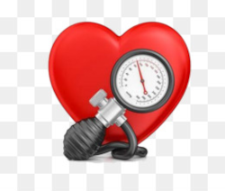
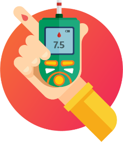

-
Diabetes:
- O que é a diabetes?
- Diabetes mellitus insulino-dependente (CID 10 - E10) é uma síndrome metabólica que acontece pela falta de insulina e/ou pela incapacidade da insulina exercer adequadamente seus efeitos, causando um aumento da glicose (açúcar) no
sangue.
- Diabetes tipo 1 - É também conhecido como diabetes insulinodependente, diabetes infanto-juvenil e diabetes imunomediado. Neste tipo de diabetes a produção de insulina do pâncreas é insuficiente pois suas células sofrem o que chamamos de destruição autoimune. Os portadores de diabetes tipo 1 necessitam injeções diárias de insulina para manterem a glicose no sangue em valores normais. Há risco de vida se as doses de insulina não são dadas diariamente. O diabetes tipo 1 embora ocorra em qualquer idade é mais comum em crianças, adolescentes ou adultos jovens.
- Diabetes tipo 2 – É também chamado de diabetes não insulinodependente ou diabetes do adulto e corresponde a 90% dos casos de diabetes. Ocorre geralmente em pessoas obesas com mais de 40 anos de idade embora na atualidade se vê com maior frequencia em jovens , em virtude de maus hábitos alimentares, sedentarismo e stress da vida urbana Neste tipo de diabetes encontra-se a presença de insulina porém sua ação é dificultada pela obesidade, o que é conhecido como resistência insulínica, uma das causas de HIPERGLICEMIA. Por ser pouco sintomática o diabetes na maioria das vezes permanece por muitos anos sem diagnóstico e sem tratamento o que favorece a ocorrência de suas complicações no coração e no cérebro.
- Diabetes Gestacional – A presença de glicose elevada no sangue durante a gravidez é denominada de Diabetes Gestacional. Geralmente a glicose no sangue se normaliza após o parto. No entanto as mulheres que apresentam ou apresentaram diabetes gestacional, possuem maior risco de desenvolverem diabetes tipo 2 tardiamente, o mesmo ocorrendo com os filhos.
Tipos de diabetes
As três principais tipos de diabetes: diabetes tipo 1, diabetes tipo 2 e diabetes gestacional.
- Vontade frequente de urinar
- Fome excessiva
- Feridas que demoram para cicatrizar
-
Hipertensão:

- O que é a hipertensão?
- A hipertensão arterial é o aumento anormal – e por longo período – da pressão que o sangue faz ao circular pelas artérias do corpo. Não à toa, a doença também é chamada de pressão alta. Para chegar a cada parte do organismo, o sangue bombeado a partir do coração exerce uma força natural contra as paredes internas das artérias. Os vasos, por sua vez, oferecem certa resistência a essa passagem. E é essa disputa que determina a pressão arterial. A pressão varia ao longo do dia. Numa pessoa deitada, ela fica mais baixa. Quando nos movimentamos, os valores sobem, porque o cérebro avisa que o corpo precisa de mais energia. A pressão é apresentaem milímetros de mercúrio (mmHg). O indivíduo é considerado hipertenso quando sua pressão fica maior ou igual a 14 por 9 na maior parte do tempo. A partir desse limite, o risco de ocorrerem doenças cardiovasculares, renais e por aí vai é significativamente maior.
- Dores no peito
- Dores de cabeça
- Visão Turva
-
Fatores de risco:
-
Dr. Drauzio Varela fala sobre a gravidade dessas doenças:
Antônio Drauzio Varella é um médico oncologista, cientista e escritor brasileiro. Formado pela Universidade de São Paulo, na qual foi aprovado em 2° lugar, é conhecido por popularizar a informação médica no Brasil, através de aparições em programas de rádio, TV e pela Internet, com um site e canal no Youtube. Wikipédia

Sintomas:
Sintomas:
| Fatores de risco para Infarto Agudo do Miocardio (IAM) em pacientes acompanhados pelo Hiperdia | ||||
| Fatores de risco | Caso (%) | Controle (%) | Odds Ratio | |
| Tabagismo | 5.486 (59) | 87.388 (80) | 1.00 (Ref.) | 3.890 (41) | 22.334 (20) | 2.77 (2.66 - 2,9) |
| Sobrepeso | 5.407 (58) | 70,605 (64) | 1.00 (Ref) | |
| 3.969 (42) | 39.117 (36) | 1.32(1.27 - 1.38) | ||
| Sedentarismo | 4.645 (49.5) | 62.322 (57) | 1.00 (Ref) | |
| 4.731 (50.5) | 47400 (43) | 1,4 (1,28 - 1,4) | ||
Fonte: Ministério da Saúde - 03/2020 (https://www.gov.br/saude/pt-br)